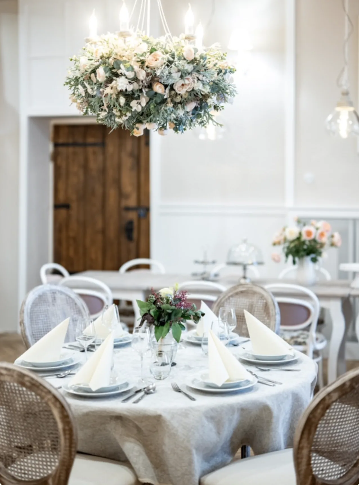
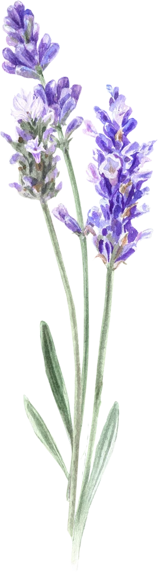
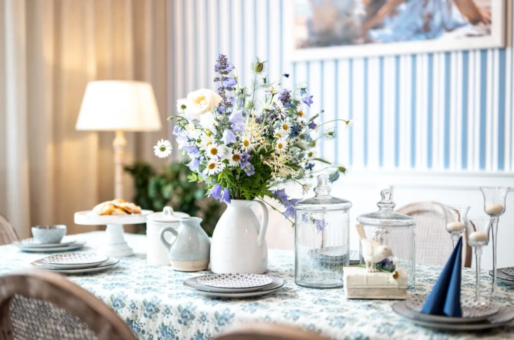
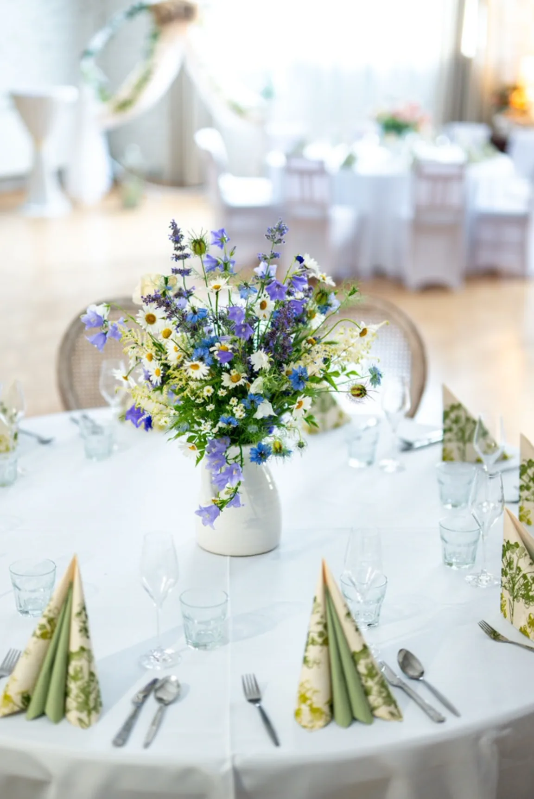
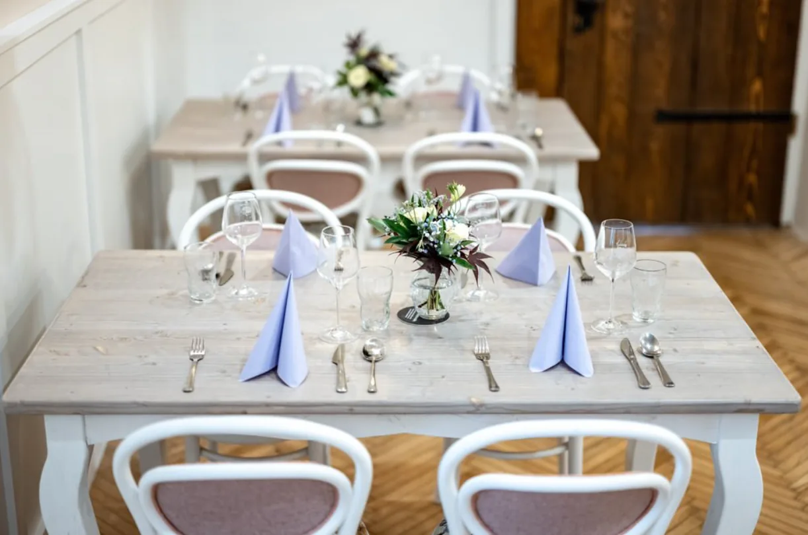
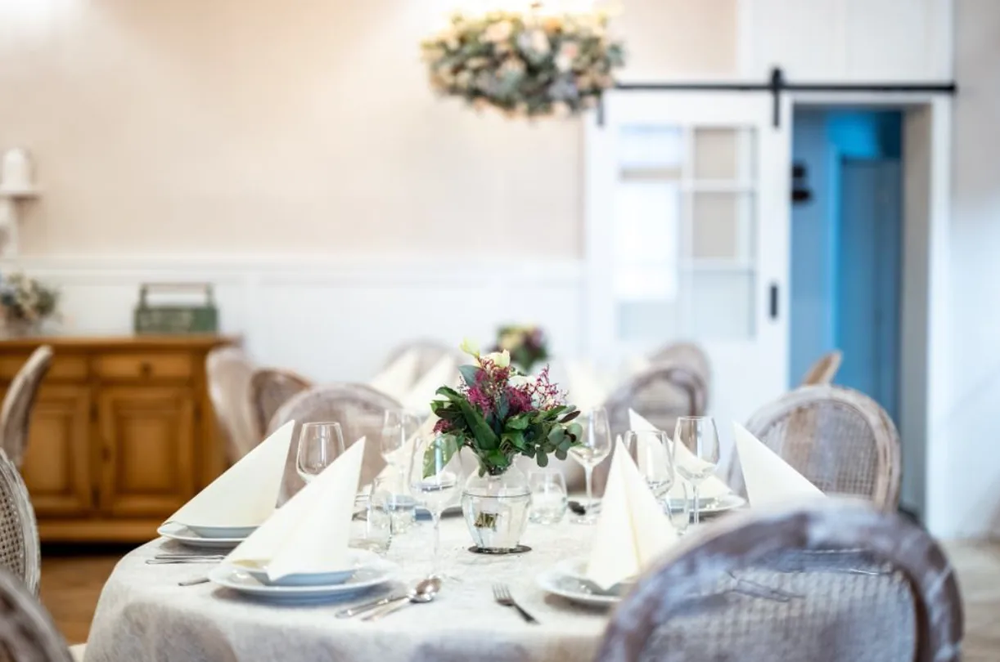
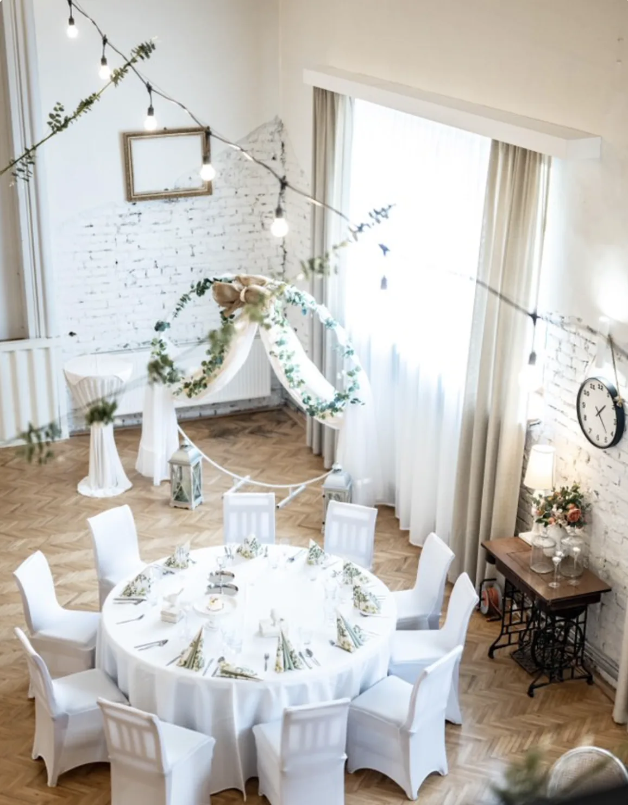
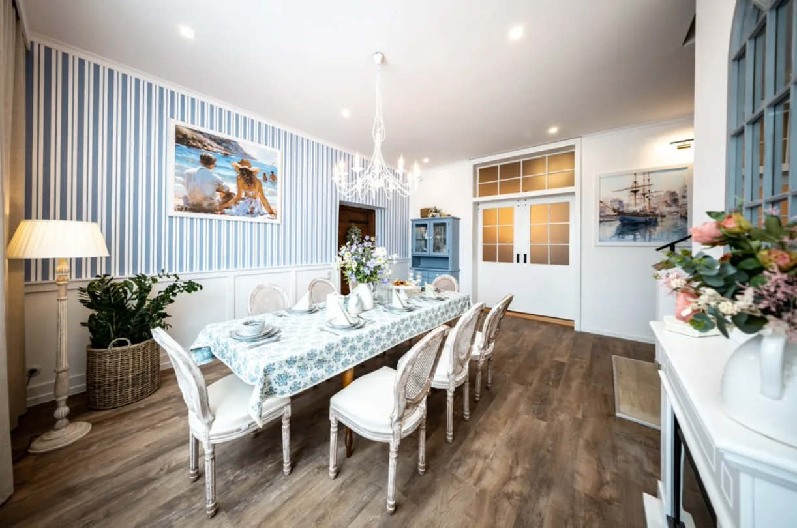

Restaurace · Slezská Ostrava
Česká kuchyně s nádechem francouzského venkova
Přinášíme poctivou českou kuchyni s nádechem francouzského venkova. Sezónní suroviny, bylinky a víno z malých vinařství.
Dnes otevřeno


O nás
Prostor pro chuť, čas a rozhovor
Prostorica vznikla z jednoduché myšlenky: vařit poctivou českou kuchyni, se sezónou a s respektem k surovině. Inspiraci hledáme na francouzském venkově, suroviny nakupujeme u farmářů z okolí Ostravy.
- Po–Ne
- otevřeno každý den
- 4
- sezónní menu za rok
- 13
- vinařství na vinném lístku
Galerie
Atmosféra francouzského venkova






Prostory
Salónky a sál pro vaši oslavu
Tři prostory pro deset až sto hostů. Vyberte ten, který sedí vaší akci, a zbytek domluvíme po telefonu.
„Dobré jídlo potřebuje tři věci: sezónu, trpělivost a stůl, u kterého se nikdo nespěchá.“
Rezervace
Připravíme vám stůl
Rezervace stolů přijímáme telefonicky. Pronájem sálu a catering domlouváme na samostatném čísle.
Rezervace stolu
Rezervujte telefonicky
Zavolejte nám a domluvíme datum, čas i počet hostů. Rádi poradíme i s výběrem salónku.
Pronájem sálu a catering: +420 602 530 838